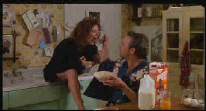

Image-Orion/1988/108m/ANA,WS 1.85
 |
Wheaties, Breakfast of Lovers!.©Universal |
The classic
ingredients of romantic comedy play out inning by inning. Nuke Laloosh is a wild, untamed
minor league rookie with arm powerful enough to cruise through eighteen strikeouts in his
debut for the Carolina league Durham Bulls. He also walks eighteen batters and throws
baseballs inadvertently at every target within shouting distance of home plate. Annie
Savoy is a baseball romantic, a fan of extraordinary focus, equally adept at analyzing a
batter’s swing or his sexual proclivity. Every year Annie picks one Durham Bull for a
special bonding, sharing her body and her passion to the tune of 144 games. The wild card
is Crash Davis, a veteran minor league catcher closing in on the dubious record of the
most home runs by a minor league ballplayer. Crash is demoted from Triple A ball to the
Bulls for the sole purpose of honing the gifted Laloosh for the Major Leagues.
Relationships develop from this opening line-up executed with strategic brilliance. Crash
butts heads with Nuke, Annie introduces Nuke to another view of garter belts, and Nuke and
Crash vie for the honor a Savoy season.
Kevin Costner eases into the role of Crash like an old baseball
mitt sliding onto the hand of a perennial all-star veteran. Susan Sarandon mixes a heavy
dose of Southern molasses with some educated sophistication to give Annie Savoy a trophy
case of eccentricities. The big surprise is Tim Robbins in his first big role. He’s
consistently hilarious, showing off a gift for offbeat comic portrayals that has carried
him through subsequent movies. A perfect dose of Robert Wohl as a loquacious coach adds
some delightful pepper.
Shelton, a former minor league ballplayer himself, knows every
inch of this playing field, and picks his team with perfect control. The bright, colorful
cinematography and sensible production design communicated the world of the Durham Bulls
splendidly. A blues and jazz score emphasize the world around the players, commentating on
the action like an old pro sportscaster.Shelton shoes a special gift in bringing out fully
natural performances from his team of actors.
The anamorphic transfer presents Bull Durham in its best
uniform. With a comfortable contrast range, every lighting condition is beautifully
transferred. Detail and color are presented with equal care. Colors are vibrant. Images
are sharp with no obvious edge enhancement. Film grain is recorded tightly. The dialogue
on the Dolby Digital 2-channel sound appears recorded slightly high. It may be a measure
of the difficulty I had periodically with Susan Sarandon’s southern accent The music
fares very well. You may have trouble keeping your tapping feet still. An enthusiastic
second audio commentary by Ron Shelton is included on a separate track.. "I have
never seen a movie in which the quality went up as the budget went up," is the kind
of statement that reflects Ron Shelton and it clear in his filmmaking as well. There are
lots of baseball details, production smiles, and above all, Shelton is thoroughly
engaging.
 ã1998
Stuart J. Kobak , all rights reserved.
ã1998
Stuart J. Kobak , all rights reserved.